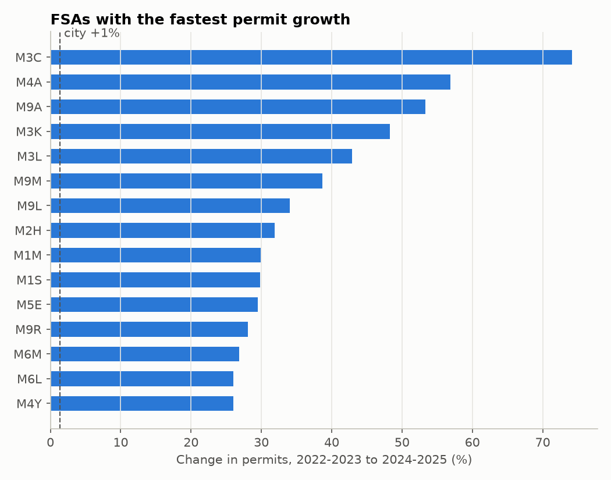
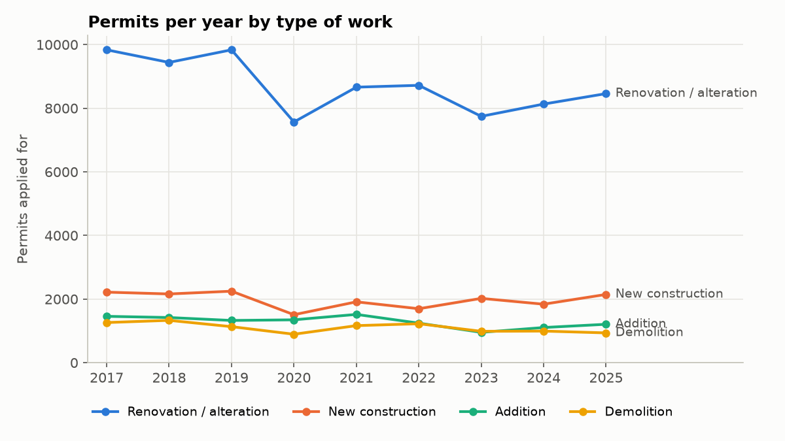
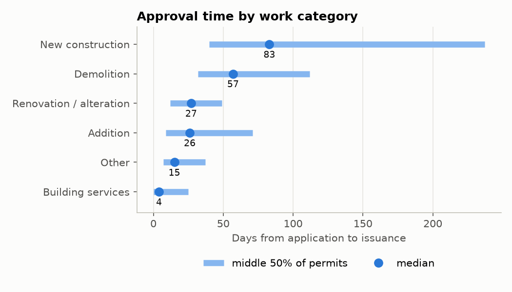
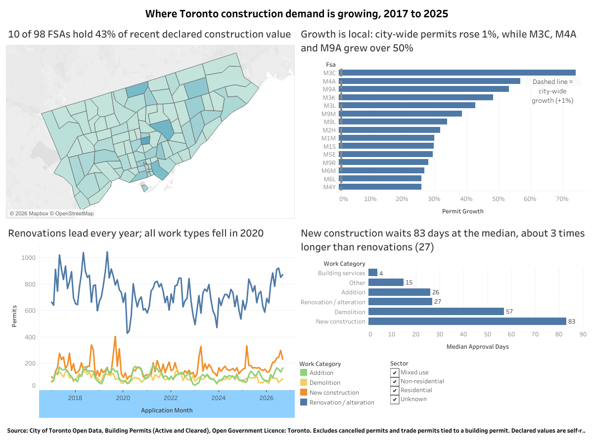

Ask
The business question
A Toronto building supply company wants to put its sales reps and inventory where construction demand is growing. Building permits are a leading signal of that demand: a permit is filed before materials are bought.
I broke the task into four questions:
- Where is permit activity concentrated, and where is it growing?
- What kind of work is it: residential or not, new construction or renovation?
- How long do permits take to approve, and does that vary by type?
- How have volumes and values changed over time, and is there a season?
The territory unit is the Forward Sortation Area (FSA), the first three characters of a postal code, because it is the smallest area the permit data reliably carries.
Prepare and process
Two files, one clean table
The City publishes active permits (refreshed daily) and cleared permits as separate files with the same 32 columns. A script downloads both through the City's open data API, and a notebook cleans them. Each step that removes rows is logged with counts.
- 1Combine the Active and Cleared files646,015
- 2Keep applications from 2017 onward437,705
- 3Keep the latest revision of each permit; when both files hold the same revision, keep the Cleared copy388,782
- 4Drop administrative record types that are not construction388,263
The harder problems did not remove rows:
- Placeholder costs. The cost column is text, and about 210,000 rows hold the phrase "DO NOT UPDATE OR DELETE THIS INFO FIELD" instead of a number. These became missing values, not zeros, and value analysis uses declared costs only.
- Implausible outliers. A $1B sprinkler permit and a $500M retail interior job did not fit their descriptions, so I set those two costs to missing and recorded why.
- Inflated counts. About 175,000 trade permits (plumbing, HVAC) belong to a main building permit. I flagged them and excluded them from demand counts, along with cancelled permits, leaving 191,381 permits.
- Per-unit filings. One area showed a 1,738-day median approval time. It turned out to be about 200 permits from 2019 for a single townhouse development, filed one per unit.
Full detail: cleaning log and data dictionary.
Analyze
What the permits say
1. Growth is local, not city-wide
City-wide permits rose only 1.4% from 2022-2023 to 2024-2025. Several FSAs grew far faster: M3C (+74%), M4A (+57%) and M9A (+53%). M3C also ranks second by declared value, with $1.64B and 90 new construction permits in 2024-2025.
I measured growth on permit counts rather than dollars, so one large tower cannot decide the ranking, and required at least 50 permits in the base years.

2. Renovation is the volume, new construction is the value
Residential work is 69% of permits but only 35% of declared value. New construction is 10% of permits but 64% of value. Renovation is the steady base: its share of permits rose from 41% to 47-48% over the period.
Total permits fell from 23,804 in 2017 to 18,109 in 2025, while declared value rose from $6.8B to $16.9B in nominal dollars. Fewer projects, but larger ones.


3. New construction takes three times as long to approve
The median new construction permit takes 83 days from application to issue, against 27 for a renovation and 4 for building services. Full "New Building" permits take a median of 389 days. A rep who follows a new building permit is following a project that may not buy materials for a year or more.
4. Demand is seasonal
A seasonal decomposition of monthly permits shows May to August running 7 to 12% above an average month, and December and January 15 to 19% below. Renovation stock needs to be in place before May.
Share
One dashboard, four views
The Tableau Public dashboard puts the value map, the growth ranking, the monthly trend and approval times on one screen. Clicking an FSA on the map filters the other three views, so a sales manager can look at their own territory.

Act
Recommendations
- Put reps where permits are growing, starting with M3C, then M9A, M1M and M6M, which combine growth with new construction.
- Stock for renovation first, and before the May to August peak. It is the steadiest, fastest-moving demand.
- Treat the big-value areas as account plays, not territories. Their value often rests on one large project with a long approval time.
The first step is a pilot: one rep in M3C, and a comparison of the company's own sales by FSA against permit counts. That tests the assumption the whole analysis rests on, that permits lead sales.
Limits
- Permits signal intent, not purchases.
- Declared costs are self-reported and in nominal dollars, not adjusted for inflation.
- 22% of New Building permits have no postal code, so FSA maps under-count new buildings.
- Some developments file one permit per unit, which can inflate counts in a single area.
Next, I would adjust values with Statistics Canada construction price indexes, add CMHC housing starts as a second signal, and refresh the data quarterly. The download and cleaning steps are scripted, so a refresh is a re-run.
What this project shows
Cleaning real public data
Combining two overlapping files, deduplicating revisions, and documenting every decision with row counts.
Analysis in Python
pandas for the pipeline, period-over-period growth with a minimum base, medians for skewed durations, statsmodels for seasonality.
Dashboard design
A filterable Tableau Public dashboard, including mapping Canadian FSAs, which Tableau reads as US ZIP codes by default.
Business framing
Turning findings into options with trade-offs, a recommendation, and a low-cost first step.